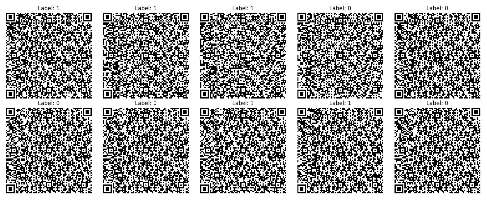

Methodology: Dataset & Augmentation
Dataset Details
Source: 69x69 QR dataset from Trad & Chehab [1], balanced between malicious and benign.
Split: 80% Training, 10% Validation, 10% Testing.
Augmentation: Rotation (±10°) and Gaussian noise (σ=0.1) to improve model robustness.

Fig. 1: Sample QR codes from the dataset.